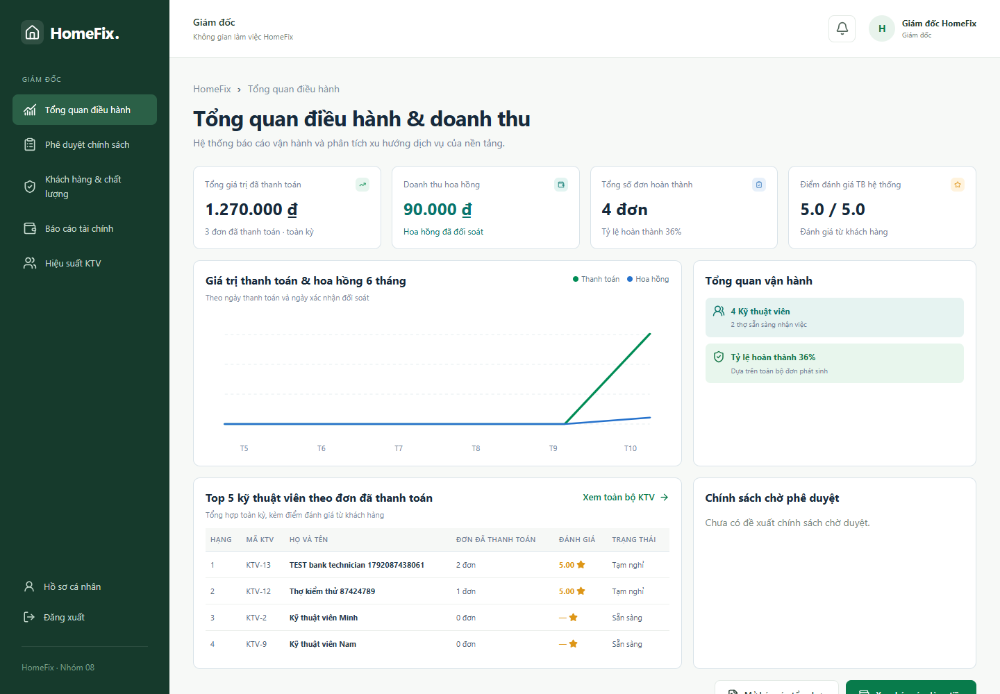

Giám đốc: báo cáo và chính sách
- Mở Tổng quan điều hành; đọc nhãn của từng chỉ tiêu và khoảng thời gian.
- Phân biệt Tổng giá trị đã thanh toán, Doanh thu hoa hồng và số đơn hoàn thành. Hoa hồng dựa trên đối soát đã xác nhận.
- Mở báo cáo tài chính, chất lượng hoặc hiệu suất; chọn kỳ và bộ lọc phù hợp. Kỳ không có dữ liệu có thể trả số 0 hoặc danh sách rỗng.
- Mở đề xuất chính sách, đọc nội dung và người đề xuất. Chọn quyết định được cho phép, nhập lý do rồi xác nhận.
- Tải lại để kiểm tra quyết định được lưu; nếu người khác đã xử lý, dùng trạng thái mới nhất.
Duyệt đề xuất hiện ghi nhận quyết định và thông báo; chưa phải cơ chế tự động áp dụng mức giá hoặc lịch hiệu lực. Không xem nút phê duyệt là đã triển khai chính sách vào toàn bộ đơn mới. Báo cáo chưa có các chỉ tiêu lợi nhuận ròng nếu thiếu dữ liệu chi phí tương ứng.


Dashboard giám đốc dùng dữ liệu thực — bấm ảnh để xem kích thước gốc.